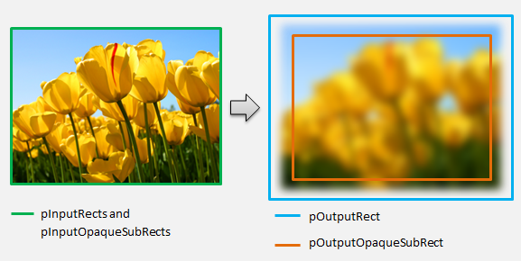
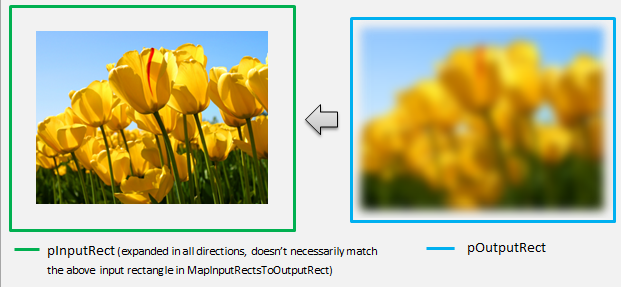

Direct2D ships with a library of effects that perform a variety of common image operations. See the built-in effects topic for the complete list of effects. For functionality that cannot be achieved with the built-in effects, Direct2D allows you to write your own custom effects using standard HLSL. You can use these custom effects alongside the built-in effects that ship with Direct2D.
To see examples of a complete pixel, vertex, and compute shader effect, see the D2DCustomEffects SDK sample.
In this topic, we show you the steps and concepts you need to design and create a fully-featured custom effect.
Conceptually, a Direct2D effect performs an imaging task, like changing brightness, de-saturating an image, or as shown above, creating a drop shadow. To the app, they are simple. They can accept zero or more input images, expose multiple properties that control their operation, and generate a single output image.
There are four different parts of a custom effect that an effect author is responsible for:
The effect interface defines how an app interacts with the custom effect. To create an effect interface, a class must implement ID2D1EffectImpl, define metadata that describes the effect (such as its name, input count and properties), and create methods that register the custom effect for use with Direct2D.
Once all of the components for an effect interface have been implemented, the class' header will appear like this:
#include <d2d1_1.h>
#include <d2d1effectauthor.h>
#include <d2d1effecthelpers.h>
// Example GUID used to uniquely identify the effect. It is passed to Direct2D during
// effect registration, and used by the developer to identify the effect for any
// ID2D1DeviceContext::CreateEffect calls in the app. The app should create
// a unique name for the effect, as well as a unique GUID using a generation tool.
DEFINE_GUID(CLSID_SampleEffect, 0x00000000, 0x0000, 0x0000, 0x00, 0x00, 0x00, 0x00, 0x00, 0x00, 0x00, 0x00);
class SampleEffect : public ID2D1EffectImpl
{
public:
// 2.1 Declare ID2D1EffectImpl implementation methods.
IFACEMETHODIMP Initialize(
_In_ ID2D1EffectContext* pContextInternal,
_In_ ID2D1TransformGraph* pTransformGraph
);
IFACEMETHODIMP PrepareForRender(D2D1_CHANGE_TYPE changeType);
IFACEMETHODIMP SetGraph(_In_ ID2D1TransformGraph* pGraph);
// 2.2 Declare effect registration methods.
static HRESULT Register(_In_ ID2D1Factory1* pFactory);
static HRESULT CreateEffect(_Outptr_ IUnknown** ppEffectImpl);
// 2.3 Declare IUnknown implementation methods.
IFACEMETHODIMP_(ULONG) AddRef();
IFACEMETHODIMP_(ULONG) Release();
IFACEMETHODIMP QueryInterface(_In_ REFIID riid, _Outptr_ void** ppOutput);
private:
// Constructor should be private since it should never be called externally.
SampleEffect();
LONG m_refCount; // Internal ref count used by AddRef() and Release() methods.
};
The ID2D1EffectImpl interface contains three methods that you must implement:
Direct2D calls the Initialize method after the ID2D1DeviceContext::CreateEffect method has been called by the app. You can use this method to perform internal initialization or any other operations needed for the effect. Additionally, you can use it to create the effect's initial transform graph.
Direct2D calls the SetGraph method when the number of inputs to the effect is changed. While most effects have a constant number of inputs, others like the Composite effect support a variable number of inputs. This method allows these effects to update their transform graph in response to a changing input count. If an effect does not support a variable input count, this method can simply return E_NOTIMPL.
The PrepareForRender method provides an opportunity for effects to perform any operations in response to external changes. Direct2D calls this method just before it renders an effect if at least one of these is true:
Apps must register effects with Direct2D before instantiating them. This registration is scoped to an instance of a Direct2D factory, and must be repeated each time the app is run. To enable this registration, a custom effect defines a unique GUID, a public method that registers the effect, and a private callback method that returns an instance of the effect.
You must define a GUID that uniquely identifies the effect for registration with Direct2D. The app uses the same to identify the effect when it calls ID2D1DeviceContext::CreateEffect.
This code demonstrates defining such a GUID for an effect. You must create its own unique GUID using a GUID generation tool such as guidgen.exe.
// Example GUID used to uniquely identify the effect. It is passed to Direct2D during
// effect registration, and used by the developer to identify the effect for any
// ID2D1DeviceContext::CreateEffect calls in the app. The app should create
// a unique name for the effect, as well as a unique GUID using a generation tool.
DEFINE_GUID(CLSID_SampleEffect, 0x00000000, 0x0000, 0x0000, 0x00, 0x00, 0x00, 0x00, 0x00, 0x00, 0x00, 0x00);
Next, define a public method for the app to call to register the effect with Direct2D. Because effect registration is specific to an instance of a Direct2D factory, the method accepts an ID2D1Factory1 interface as a parameter. To register the effect, the method then calls the ID2D1Factory1::RegisterEffectFromString API on the ID2D1Factory1 parameter.
This API accepts an XML string that describes the metadata, inputs, and properties of the effect. The metadata for an effect is for informational purposes only, and can be queried by the app through the ID2D1Properties interface. The input and property data, on the other hand, is used by Direct2D and represents the effect's functionality.
An XML string for a minimal sample effect is shown here. Adding custom properties to the XML is covered in the Adding custom properties to an effect section.
#define XML(X) TEXT(#X) // This macro creates a single string from multiple lines of text.
PCWSTR pszXml =
XML(
<?xml version='1.0'?>
<Effect>
<!-- System Properties -->
<Property name='DisplayName' type='string' value='SampleEffect'/>
<Property name='Author' type='string' value='Contoso'/>
<Property name='Category' type='string' value='Sample'/>
<Property name='Description' type='string' value='This is a demo effect.'/>
<Inputs>
<Input name='SourceOne'/>
<!-- <Input name='SourceTwo'/> -->
<!-- Additional inputs go here. -->
</Inputs>
<!-- Custom Properties go here. -->
</Effect>
);
The effect must also provide a private callback method that returns an instance of the effect through a single IUnknown** parameter. A pointer to this method is provided to Direct2D when the effect is registered via the ID2D1Factory1::RegisterEffectFromString API through the PD2D1_EFFECT_FACTORY\ parameter.
HRESULT __stdcall SampleEffect::CreateEffect(_Outptr_ IUnknown** ppEffectImpl)
{
// This code assumes that the effect class initializes its reference count to 1.
*ppEffectImpl = static_cast<ID2D1EffectImpl*>(new SampleEffect());
if (*ppEffectImpl == nullptr)
{
return E_OUTOFMEMORY;
}
return S_OK;
}
Finally, the effect must implement the IUnknown interface for compatibility with COM.
An effect can use several different transforms (individual image operations) to create its desired imaging effect. To control the order in which these transforms are applied to the input image, the effect arranges them into a transform graph. A transform graph can make use of the effects and transforms included in Direct2D as well as custom transforms created by the effect author.
These are the most commonly used transforms provided with Direct2D.
Once you create a transform, the effect's input needs to be connected to the transform's input, and the transform's output needs to be connected to the effect's output. When an effect only contains a single transform, you can use the ID2D1TransformGraph::SetSingleTransformNode method to easily accomplish this.
You can create or modify a transform in the effect's Initialize or SetGraph methods using the provided ID2D1TransformGraph parameter. If an effect needs to make changes to the transform graph in another method where this parameter is not available, the effect can save the ID2D1TransformGraph parameter as a member variable of the class and access it elsewhere, such as PrepareForRender or a custom property callback method.
A sample Initialize method is shown here. This method creates a single-node transform graph that offsets the image by one hundred pixels in each axis.
IFACEMETHODIMP SampleEffect::Initialize(
_In_ ID2D1EffectContext* pEffectContext,
_In_ ID2D1TransformGraph* pTransformGraph
)
{
HRESULT hr = pEffectContext->CreateOffsetTransform(
D2D1::Point2L(100,100), // Offsets the input by 100px in each axis.
&m_pOffsetTransform
);
if (SUCCEEDED(hr))
{
// Connects the effect's input to the transform's input, and connects
// the transform's output to the effect's output.
hr = pTransformGraph->SetSingleTransformNode(m_pOffsetTransform);
}
return hr;
}
Adding multiple transforms to an effect's transform graph allows effects to internally perform multiple image operations that are presented to an app as a single unified effect.
As noted above, the effect's transform graph may be edited in any effect method using the ID2D1TransformGraph parameter received in the effect's Initialize method. The following APIs on that interface can be used to create or modify an effect's transform graph:
The AddNode method, in effect, 'registers' the transform with the effect, and must be called before the transform can be used with any of the other transform graph methods.
The ConnectToEffectInput method connects the effect's image input to a transform's input. The same effect input can be connected to multiple transforms.
The ConnectNode method connects a transform's output to another transform's input. A transform output can be connected to multiple transforms.
The SetOutputNode method connects a transform's output to the effect's output. Because an effect only has one output, only a single transform can be designated as the 'output node'.
This code uses two separate transforms to create a unified effect. In this case, the effect is a translated drop shadow.
IFACEMETHODIMP SampleEffect::Initialize(
_In_ ID2D1EffectContext* pEffectContext,
_In_ ID2D1TransformGraph* pTransformGraph
)
{
// Create the shadow effect.
HRESULT hr = pEffectContext->CreateEffect(CLSID_D2D1Shadow, &m_pShadowEffect);
// Create the shadow transform from the shadow effect.
if (SUCCEEDED(hr))
{
hr = pEffectContext->CreateTransformNodeFromEffect(m_pShadowEffect, &m_pShadowTransform);
}
// Create the offset transform.
if (SUCCEEDED(hr))
{
hr = pEffectContext->CreateOffsetTransform(
D2D1::Point2L(0,0),
&m_pOffsetTransform
);
}
// Register both transforms with the effect graph.
if (SUCCEEDED(hr))
{
hr = pTransformGraph->AddNode(m_pShadowTransform);
}
if (SUCCEEDED(hr))
{
hr = pTransformGraph->AddNode(m_pOffsetTransform);
}
// Connect the custom effect's input to the shadow transform's input.
if (SUCCEEDED(hr))
{
hr = pTransformGraph->ConnectToEffectInput(
0, // Input index of the effect.
m_pShadowTransform, // The receiving transform.
0 // Input index of the receiving transform.
);
}
// Connect the shadow transform's output to the offset transform's input.
if (SUCCEEDED(hr))
{
hr = pTransformGraph->ConnectNode(
m_pShadowTransform, // 'From' node.
m_pOffsetTransform, // 'To' node.
0 // Input index of the 'to' node. There is only one output for the 'From' node.
);
}
// Connect the offset transform's output to the custom effect's output.
if (SUCCEEDED(hr))
{
hr = pTransformGraph->SetOutputNode(
m_pOffsetTransform
);
}
return hr;
}
Effects can define custom properties that allow an app to change the effect's behavior during runtime. There are three steps to define a property for a custom effect:
You must define a custom effect's properties during the effect's initial registration with Direct2D. First, you must update the effect's registration XML in its public registration method with the new property:
PCWSTR pszXml =
TEXT(
<?xml version='1.0'?>
<Effect>
<!-- System Properties -->
<Property name='DisplayName' type='string' value='SampleEffect'/>
<Property name='Author' type='string' value='Contoso'/>
<Property name='Category' type='string' value='Sample'/>
<Property name='Description'
type='string'
value='Translates an image by a user-specifiable amount.'/>
<Inputs>
<Input name='Source'/>
<!-- Additional inputs go here. -->
</Inputs>
<!-- Custom Properties go here. -->
<Property name='Offset' type='vector2'>
<Property name='DisplayName' type='string' value='Image Offset'/>
<!— Optional sub-properties -->
<Property name='Min' type='vector2' value='(-1000.0, -1000.0)' />
<Property name='Max' type='vector2' value='(1000.0, 1000.0)' />
<Property name='Default' type='vector2' value='(0.0, 0.0)' />
</Property>
</Effect>
);
When you define an effect property in XML, it needs a name, a type, and a display name. A property's display name, as well as the overall effect's category, author, and description values can and should be localized.
For each property, an effect can optionally specify default, min, and max values. These values are for informational use only. They are not enforced by Direct2D. It is up to you to implement any specified default/min/max logic in the effect class yourself.
The type value listed in the XML for the property must match the corresponding data type used by the property's getter and setter methods. Corresponding XML values for each data type are shown in this table:
| Data type | Corresponding XML value |
|---|---|
| PWSTR | string |
| BOOL | bool |
| UINT | uint32 |
| INT | int32 |
| FLOAT | float |
| D2D_VECTOR_2F | vector2 |
| D2D_VECTOR_3F | vector3 |
| D2D_VECTOR_4F | vector4 |
| D2D_MATRIX_3X2_F | matrix3x2 |
| D2D_MATRIX_4X3_F | matrix4x3 |
| D2D_MATRIX_4X4_F | matrix4x4 |
| D2D_MATRIX_5X4_F | matrix5x4 |
| BYTE[] | blob |
| IUnknown* | iunknown |
| ID2D1ColorContext* | colorcontext |
| CLSID | clsid |
| Enumeration (D2D1_INTERPOLATION_MODE, etc.) | enum |
Â
Next, the effect must map this new property to getter and setter methods. This is done through the D2D1_PROPERTY_BINDING array that is passed into the ID2D1Factory1::RegisterEffectFromString method.
The D2D1_PROPERTY_BINDING array looks like this:
const D2D1_PROPERTY_BINDING bindings[] =
{
D2D1_VALUE_TYPE_BINDING(
L"Offset", // The name of property. Must match name attribute in XML.
&SetOffset, // The setter method that is called on "SetValue".
&GetOffset // The getter method that is called on "GetValue".
)
};
Once you create the XML and bindings array, pass them into the RegisterEffectFromString method:
pFactory->RegisterEffectFromString(
CLSID_SampleEffect, // GUID defined in class header file.
pszXml, // Previously-defined XML that describes effect.
bindings, // The previously-defined property bindings array.
ARRAYSIZE(bindings), // Number of entries in the property bindings array.
CreateEffect // Static method that returns an instance of the effect's class.
);
The D2D1_VALUE_TYPE_BINDING macro requires the effect class to inherit from ID2D1EffectImpl before any other interface.
Custom properties for an effect are indexed in the order they are declared in the XML, and once created can be accessed by the app using the ID2D1Properties::SetValue and ID2D1Properties::GetValue methods. For convenience, you can create a public enumeration that lists each property in the effect's header file:
typedef enum SAMPLEEFFECT_PROP
{
SAMPLEFFECT_PROP_OFFSET = 0
};
The next step is to create the getter and setter methods for the new property. The names of the methods must match the ones specified in the D2D1_PROPERTY_BINDING array. In addition, the property type specified in the effect's XML must match the type of the setter method's parameter and the getter method's return value.
HRESULT SampleEffect::SetOffset(D2D_VECTOR_2F offset)
{
// Method must manually clamp to values defined in XML.
offset.x = min(offset.x, 1000.0f);
offset.x = max(offset.x, -1000.0f);
offset.y = min(offset.y, 1000.0f);
offset.y = max(offset.y, -1000.0f);
m_offset = offset;
return S_OK;
}
D2D_VECTOR_2F SampleEffect::GetOffset() const
{
return m_offset;
}
To actually update an effect's image output in response to a property change, the effect needs to change its underlying transforms. This is typically done in the effect's PrepareForRender method which Direct2D automatically calls when one of an effect's properties has been changed. However, transforms can be updated in any of the effect's methods: such as Initialize or the effect's property setter methods.
For example, if an effect contained an ID2D1OffsetTransform and wanted to modify its offset value in response to the effect's Offset property being changed, it would add the following code in PrepareForRender:
IFACEMETHODIMP SampleEffect::PrepareForRender(D2D1_CHANGE_TYPE changeType)
{
// All effect properties are DPI independent (specified in DIPs). In this offset
// example, the offset value provided must be scaled from DIPs to pixels to ensure
// a consistent appearance at different DPIs (excluding minor scaling artifacts).
// A context's DPI can be retrieved using the ID2D1EffectContext::GetDPI API.
D2D1_POINT_2L pixelOffset;
pixelOffset.x = static_cast<LONG>(m_offset.x * (m_dpiX / 96.0f));
pixelOffset.y = static_cast<LONG>(m_offset.y * (m_dpiY / 96.0f));
// Update the effect's offset transform with the new offset value.
m_pOffsetTransform->SetOffset(pixelOffset);
return S_OK;
}
To implement image operations beyond what is provided in Direct2D, you must implement custom transforms. Custom transforms can arbitrarily change an input image through the use of custom HLSL shaders.
Transforms implement one of two different interfaces depending on the types of shaders they use. Transforms using pixel and/or vertex shaders must implement ID2D1DrawTransform, while transforms using compute shaders must implement ID2D1ComputeTransform. These interfaces both inherit from ID2D1Transform. This section focuses on implementing the functionality that is common to both.
The ID2D1Transform interface has four methods to implement:
This method returns an integer representing the input count for the transform.
IFACEMETHODIMP_(UINT32) GetInputCount() const
{
return 1;
}
Direct2D calls the MapInputRectsToOutputRect method each time the transform is rendered. Direct2D passes a rectangle representing the bounds of each of the inputs to the transform. The transform is then responsible for calculating the bounds of the output image. The size of the rectangles for all the methods on this interface (ID2D1Transform) are defined in pixels, not DIPs.
This method is also responsible for calculating the region of the output that is opaque based on the logic of its shader and the opaque regions of each input. An opaque region of an image is defined as that where the alpha channel is '1' for the entirety of the rectangle. If it is unclear whether a transform's output is opaque, the output opaque rectangle should be set to (0, 0, 0, 0) as a safe value. Direct2D uses this info to perform rendering optimizations with 'guaranteed opaque' content. If this value is inaccurate, it can result in incorrect rendering.
The you can modify the transform's rendering behavior (as defined in sections 6 through 8) during this method. However, the you can't modify other transforms in the transform graph, or the graph layout itself here.
IFACEMETHODIMP SampleTransform::MapInputRectsToOutputRect(
_In_reads_(inputRectCount) const D2D1_RECT_L* pInputRects,
_In_reads_(inputRectCount) const D2D1_RECT_L* pInputOpaqueSubRects,
UINT32 inputRectCount,
_Out_ D2D1_RECT_L* pOutputRect,
_Out_ D2D1_RECT_L* pOutputOpaqueSubRect
)
{
// This transform is designed to only accept one input.
if (inputRectCount != 1)
{
return E_INVALIDARG;
}
// The output of the transform will be the same size as the input.
*pOutputRect = pInputRects[0];
// Indicate that the image's opacity has not changed.
*pOutputOpaqueSubRect = pInputOpaqueSubRects[0];
// The size of the input image can be saved here for subsequent operations.
m_inputRect = pInputRects[0];
return S_OK;
}
For a more complex example, consider how a simple blur operation would be represented:
If a blur operation uses a 5 pixel radius, the size of the output rectangle must expand by 5 pixels, as shown below. When modifying rectangle coordinates, a transform must ensure that its logic does not cause any over/underflows in the rectangle coordinates.
// Expand output image by 5 pixels.
// Do not expand empty input rectangles.
if (pInputRects[0].right > pInputRects[0].left &&
pInputRects[0].bottom > pInputRects[0].top
)
{
pOutputRect->left = ((pInputRects[0].left - 5) < pInputRects[0].left ) ? (pInputRects[0].left - 5) : LONG_MIN;
pOutputRect->top = ((pInputRects[0].top - 5) < pInputRects[0].top ) ? (pInputRects[0].top - 5) : LONG_MIN;
pOutputRect->right = ((pInputRects[0].right + 5) > pInputRects[0].right ) ? (pInputRects[0].right + 5) : LONG_MAX;
pOutputRect->bottom = ((pInputRects[0].bottom + 5) > pInputRects[0].bottom) ? (pInputRects[0].bottom + 5) : LONG_MAX;
}
Because the image is blurred, a region of the image which was opaque may now be partially transparent. This is because the area outside the image defaults to transparent black and this transparency will be blended into the image around the edges. The transform must reflect this in its output opaque rectangle calculations:
// Shrink opaque region by 5 pixels.
pOutputOpaqueSubRect->left = pInputOpaqueSubRects[0].left + 5;
pOutputOpaqueSubRect->top = pInputOpaqueSubRects[0].top + 5;
pOutputOpaqueSubRect->right = pInputOpaqueSubRects[0].right - 5;
pOutputOpaqueSubRect->bottom = pInputOpaqueSubRects[0].bottom - 5;
These calculations are visualized here:

For more info about this method, see the MapInputRectsToOutputRect reference page.
Direct2D calls the MapOutputRectToInputRects method after MapInputRectsToOutputRect. The transform must calculate what portion of the image it needs to read from in order to correctly render the requested output region.
As before, if an effect strictly maps pixels 1-1, it can pass the output rectangle through to the input rectangle:
IFACEMETHODIMP SampleTransform::MapOutputRectToInputRects(
_In_ const D2D1_RECT_L* pOutputRect,
_Out_writes_(inputRectCount) D2D1_RECT_L* pInputRects,
UINT32 inputRectCount
) const
{
// This transform is designed to only accept one input.
if (inputRectCount != 1)
{
return E_INVALIDARG;
}
// The input needed for the transform is the same as the visible output.
pInputRects[0] = *pOutputRect;
return S_OK;
}
Likewise, if a transform shrinks or expands an image (like the blur example here), pixels often use surrounding pixels to calculate their value. With a blur, a pixel is averaged with its surrounding pixels, even if they are outside of the bounds of the input image. This behavior is reflected in the calculation. As before, the transform checks for overflows when expanding a rectangle's coordinates.
// Expand the input rectangle to reflect that more pixels need to
// be read from than are necessarily rendered in the effect's output.
pInputRects[0].left = ((pOutputRect->left - 5) < pOutputRect->left ) ? (pOutputRect->left - 5) : LONG_MIN;
pInputRects[0].top = ((pOutputRect->top - 5) < pOutputRect->top ) ? (pOutputRect->top - 5) : LONG_MIN;
pInputRects[0].right = ((pOutputRect->right + 5) > pOutputRect->right ) ? (pOutputRect->right + 5) : LONG_MAX;
pInputRects[0].bottom = ((pOutputRect->bottom + 5) > pOutputRect->bottom) ? (pOutputRect->bottom + 5) : LONG_MAX;
This figure visualizes the calculation. Direct2D automatically samples transparent black pixels where the input image doesn't exist, allowing the blur to be blended gradually with the existing content on the screen.

If the mapping is non-trivial, then this method should set the input rectangle to the maximum area to guarantee correct results. To do this, set the left and top edges to INT_MIN, and the right and bottom edges to INT_MAX.
For more info about this method, see the MapOutputRectToInputRects topic.
Direct2D also calls the MapInvalidRect method. However, unlike the MapInputRectsToOutputRect and MapOutputRectToInputRects methods Direct2D is not guaranteed to call it at any particular time. This method conceptually decides what part of a transform's output needs to be re-rendered in response to part or all of its input changing. There are three different scenarios for which to calculate a transform's invalid rect.
For transforms that map pixels 1-1, simply pass the invalid input rectangle through to the invalid output rectangle:
IFACEMETHODIMP SampleTransform::MapInvalidRect(
UINT32 inputIndex,
D2D1_RECT_L invalidInputRect,
_Out_ D2D1_RECT_L* pInvalidOutputRect
) const
{
// This transform is designed to only accept one input.
if (inputIndex != 0)
{
return E_INVALIDARG;
}
// If part of the transform's input is invalid, mark the corresponding
// output region as invalid.
*pInvalidOutputRect = invalidInputRect;
return S_OK;
}
When a transform's output pixels are dependent on their surrounding area, the invalid input rectangle must correspondingly be expanded. This is to reflect that pixels surrounding the invalid input rectangle will also be affected and become invalid. For example, a five pixel blur uses the following calculation:
// Expand the input invalid rectangle by five pixels in each direction. This
// reflects that a change in part of the given input image will cause a change
// in an expanded part of the output image (five pixels in each direction).
pInvalidOutputRect->left = ((invalidInputRect.left - 5) < invalidInputRect.left ) ? (invalidInputRect.left - 5) : LONG_MIN;
pInvalidOutputRect->top = ((invalidInputRect.top - 5) < invalidInputRect.top ) ? (invalidInputRect.top - 5) : LONG_MIN;
pInvalidOutputRect->right = ((invalidInputRect.right + 5) > invalidInputRect.right ) ? (invalidInputRect.right + 5) : LONG_MAX;
pInvalidOutputRect->bottom = ((invalidInputRect.bottom + 5) > invalidInputRect.bottom) ? (invalidInputRect.bottom + 5) : LONG_MAX;
For transforms where input and output pixels do not have a simple mapping, the entire output can be marked as invalid. For example, if a transform simply outputs the average color of the input, the entire output of the transform changes if even a small part of the input is changed. In this case, the invalid output rectangle should be set to a logically infinite rectangle (shown below). Direct2D automatically clamps this to the bounds of the output.
// If any change in the input image affects the entire output, the
// transform should set pInvalidOutputRect to a logically infinite rect.
*pInvalidOutputRect = D2D1::RectL(LONG_MIN, LONG_MIN, LONG_MAX, LONG_MAX);
For more info about this method, see the MapInvalidRect topic.
Once these methods have been implemented, your transform's header will contain the following:
class SampleTransform : public ID2D1Transform
{
public:
SampleTransform();
// ID2D1TransformNode Methods:
IFACEMETHODIMP_(UINT32) GetInputCount() const;
// ID2D1Transform Methods:
IFACEMETHODIMP MapInputRectsToOutputRect(
_In_reads_(inputRectCount) const D2D1_RECT_L* pInputRects,
_In_reads_(inputRectCount) const D2D1_RECT_L* pInputOpaqueSubRects,
UINT32 inputRectCount,
_Out_ D2D1_RECT_L* pOutputRect,
_Out_ D2D1_RECT_L* pOutputOpaqueSubRect
);
IFACEMETHODIMP MapOutputRectToInputRects(
_In_ const D2D1_RECT_L* pOutputRect,
_Out_writes_(inputRectCount) D2D1_RECT_L* pInputRects,
UINT32 inputRectCount
) const;
IFACEMETHODIMP MapInvalidRect(
UINT32 inputIndex,
D2D1_RECT_L invalidInputRect,
_Out_ D2D1_RECT_L* pInvalidOutputRect
) const;
// IUnknown Methods:
IFACEMETHODIMP_(ULONG) AddRef();
IFACEMETHODIMP_(ULONG) Release();
IFACEMETHODIMP QueryInterface(REFIID riid, _Outptr_ void** ppOutput);
private:
LONG m_cRef; // Internal ref count used by AddRef() and Release() methods.
D2D1_RECT_L m_inputRect; // Stores the size of the input image.
};
Once a transform has been created, it needs to provide a shader that will manipulate the image pixels. This section covers the steps to using a pixel shader with a custom transform.
To use a pixel shader, the transform must implement the ID2D1DrawTransform interface, which inherits from the ID2D1Transform interface described in section 5. This interface contains one new method to implement:
Direct2D calls the SetDrawInfo method when the transform is first added to an effect's transform graph. This method provides an ID2D1DrawInfo parameter that controls how the transform is rendered. See the ID2D1DrawInfo topic for the methods available here.
If the transform chooses to store this parameter as a class member variable, the drawInfo object can be accessed and changed from other methods such as property setters or MapInputRectsToOutputRect. Notably, it cannot be called from the MapOutputRectToInputRects or MapInvalidRect methods on ID2D1Transform.
Next, the transform must define a unique GUID for the pixel shader itself. This is used when Direct2D loads the shader into memory, as well as when the transform chooses which pixel shader to use for execution. Tools such as guidgen.exe, which is included with Visual Studio, can be used to generate a random GUID.
// Example GUID used to uniquely identify HLSL shader. Passed to Direct2D during
// shader load, and used by the transform to identify the shader for the
// ID2D1DrawInfo::SetPixelShader method. The effect author should create a
// unique name for the shader as well as a unique GUID using
// a GUID generation tool.
DEFINE_GUID(GUID_SamplePixelShader, 0x00000000, 0x0000, 0x0000, 0x00, 0x00, 0x00, 0x00, 0x00, 0x00, 0x00, 0x00);
A pixel shader must be loaded into memory before it can be used by the transform.
To load the pixel shader into memory, the transform should read the compiled shader byte code from the .CSO file generated by Visual Studio (see Direct3D documentation for details) into a byte array. This technique is demonstrated in detail in the D2DCustomEffects SDK sample.
Once the shader data has been loaded into a byte array, call the LoadPixelShader method on the effect's ID2D1EffectContext object. Direct2D ignores calls to LoadPixelShader when a shader with the same GUID has already been loaded.
After a pixel shader has been loaded into memory, the transform needs to select it for execution by passing its GUID to the SetPixelShader method on the ID2D1DrawInfo parameter provided during the SetDrawInfo method. The pixel shader must be already loaded into memory before being selected for execution.
To change how a shader executes, a transform may pass a constant buffer to the pixel shader. To do so, a transform defines a struct that contains the desired variables in the class header:
// This struct defines the constant buffer of the pixel shader.
struct
{
float valueOne;
float valueTwo;
} m_constantBuffer;
The transform then calls the ID2D1DrawInfo::SetPixelShaderConstantBuffer method on the ID2D1DrawInfo parameter provided in the SetDrawInfo method to pass this buffer to the shader.
The HLSL also needs to define a corresponding struct that represents the constant buffer. The variables contained in the shader's struct must match those in the transform's struct.
cbuffer constants : register(b0)
{
float valueOne : packoffset(c0.x);
float valueTwo : packoffset(c0.y);
};
Once the buffer has been defined, the values contained within can be read from anywhere within the pixel shader.
Direct2D transforms use shaders authored using standard HLSL. However, there are a few key concepts to writing a pixel shader that executes from the context of a transform. For a completed example of a fully functionally pixel shader, see the D2DCustomEffects SDK sample.
Direct2D automatically maps a transform's inputs to Texture2D and SamplerState objects in the HLSL. The first Texture2D is located at register t0, and the first SamplerState is located at register s0. Each additional input is located at the next corresponding registers (t1 and s1 for example). Pixel data for a particular input can be sampled by calling Sample on the Texture2D object and passing in the corresponding SamplerState object and the texel coordinates.
A custom pixel shader is run once for each pixel that is rendered. Each time the shader is run, Direct2D automatically provides three parameters that identify its current execution position:
Texture2D InputTexture : register(t0);
SamplerState InputSampler : register(s0);
float4 main(
float4 clipSpaceOutput : SV_POSITION,
float4 sceneSpaceOutput : SCENE_POSITION,
float4 texelSpaceInput0 : TEXCOORD0
) : SV_Target
{
// Samples pixel from ten pixels above current position.
float2 sampleLocation =
texelSpaceInput0.xy // Sample position for the current output pixel.
+ float2(0,-10) // An offset from which to sample the input, specified in pixels.
* texelSpaceInput0.zw; // Multiplier that converts pixel offset to sample position offset.
float4 color = InputTexture.Sample(
InputSampler, // Sampler and Texture must match for a given input.
sampleLocation
);
return color;
}
You can use vertex shaders to accomplish different imaging scenarios than pixel shaders. In particular, vertex shaders can perform geometry-based image effects by transforming vertices that comprise an image. Vertex shaders can be used independently of or in conjunction with transform-specified pixel shaders. If a vertex shader is not specified, Direct2D substitutes in a default vertex shader for use with the custom pixel shader.
The process for adding a vertex shader to a custom transform is similar to that of a pixel shader – the transform implements the ID2D1DrawTransform interface, creates a GUID, and (optionally) passes constant buffers to the shader. However, there are a few key additional steps that are unique to vertex shaders:
A vertex shader by definition executes on vertices passed to it, not individual pixels. To specify the vertices for the shader to execute on, a transform creates a vertex buffer to pass to the shader. The layout of vertex buffers is beyond the scope of this document. Please see the Direct3D reference for details, or the D2DCustomEffects SDK sample for a sample implementation.
After creating a vertex buffer in memory, the transform uses the CreateVertexBuffer method on the containing effect's ID2D1EffectContext object to pass that data to the GPU. Again, see the D2DCustomEffects SDK sample for a sample implementation.
If no vertex buffer is specified by the transform, Direct2D passes a default vertex buffer representing the rectangular image location.
Like with pixel shaders, the transform must load and select a vertex shader for execution. To load the vertex shader, it calls the LoadVertexShader method on the ID2D1EffectContext method received in the effect's Initialize method. To select the vertex shader for execution, it calls SetVertexProcessing on the ID2D1DrawInfo parameter received in the transform's SetDrawInfo method. This method accepts a GUID for a previously-loaded vertex shader as well as (optionally) a previously-created vertex buffer for the shader to execute on.
A draw transform can contain both a pixel shader and a vertex shader. If a transform defines both a pixel shader and a vertex shader, then the output from the vertex shader is given directly to the pixel shader: the app can customize the return signature of the vertex shader / the parameters of the pixel shader as long as they are consistent.
On the other hand, if a transform only contains a vertex shader, and relies on Direct2D's default pass-through pixel shader, it must return the following default output:
struct VSOut
{
float4 clipSpaceOutput : SV_POSITION;
float4 sceneSpaceOutput : SCENE_POSITION;
float4 texelSpaceInput0 : TEXCOORD0;
};
A vertex shader stores the result of its vertex transformations in the shader's Scene-space output variable. To compute the Clip-space output and the Texel-space input variables, Direct2D automatically provides conversion matrices in a constant buffer:
// Constant buffer b0 is used to store the transformation matrices from scene space
// to clip space. Depending on the number of inputs to the vertex shader, there
// may be more or fewer "sceneToInput" matrices.
cbuffer Direct2DTransforms : register(b0)
{
float2x1 sceneToOutputX;
float2x1 sceneToOutputY;
float2x1 sceneToInput0X;
float2x1 sceneToInput0Y;
};
Sample vertex shader code can be found below that uses the conversion matrices to calculate the correct clip and texel spaces expected by Direct2D:
// Constant buffer b0 is used to store the transformation matrices from scene space
// to clip space. Depending on the number of inputs to the vertex shader, there
// may be more or fewer "sceneToInput" matrices.
cbuffer Direct2DTransforms : register(b0)
{
float2x1 sceneToOutputX;
float2x1 sceneToOutputY;
float2x1 sceneToInput0X;
float2x1 sceneToInput0Y;
};
// Default output structure. This can be customized if transform also contains pixel shader.
struct VSOut
{
float4 clipSpaceOutput : SV_POSITION;
float4 sceneSpaceOutput : SCENE_POSITION;
float4 texelSpaceInput0 : TEXCOORD0;
};
// The parameter(s) passed to the vertex shader are defined by the vertex buffer's layout
// as specified by the transform. If no vertex buffer is specified, Direct2D passes two
// triangles representing the rectangular image with the following layout:
//
// float4 outputScenePosition : OUTPUT_SCENE_POSITION;
//
// The x and y coordinates of the outputScenePosition variable represent the image's
// position on the screen. The z and w coordinates are used for perspective and
// depth-buffering.
VSOut GeometryVS(float4 outputScenePosition : OUTPUT_SCENE_POSITION)
{
VSOut output;
// Compute Scene-space output (vertex simply passed-through here).
output.sceneSpaceOutput.x = outputScenePosition.x;
output.sceneSpaceOutput.y = outputScenePosition.y;
output.sceneSpaceOutput.z = outputScenePosition.z;
output.sceneSpaceOutput.w = outputScenePosition.w;
// Generate standard Clip-space output coordinates.
output.clipSpaceOutput.x = (output.sceneSpaceOutput.x * sceneToOutputX[0]) +
output.sceneSpaceOutput.w * sceneToOutputX[1];
output.clipSpaceOutput.y = (output.sceneSpaceOutput.y * sceneToOutputY[0]) +
output.sceneSpaceOutput.w * sceneToOutputY[1];
output.clipSpaceOutput.z = output.sceneSpaceOutput.z;
output.clipSpaceOutput.w = output.sceneSpaceOutput.w;
// Generate standard Texel-space input coordinates.
output.texelSpaceInput0.x = (outputScenePosition.x * sceneToInput0X[0]) + sceneToInput0X[1];
output.texelSpaceInput0.y = (outputScenePosition.y * sceneToInput0Y[0]) + sceneToInput0Y[1];
output.texelSpaceInput0.z = sceneToInput0X[0];
output.texelSpaceInput0.w = sceneToInput0Y[0];
return output;
}
The above code can be used as a starting point for a vertex shader. It merely passes through the input image without performing any transforms. Again, see the D2DCustomEffects SDK sample for a fully-implemented vertex shader-based transform.
If no vertex buffer is specified by the transform, Direct2D substitutes in a default vertex buffer representing the rectangular image location. The parameters to the vertex shader are changed to those of the default shader output:
struct VSIn
{
float4 clipSpaceOutput : SV_POSITION;
float4 sceneSpaceOutput : SCENE_POSITION;
float4 texelSpaceInput0 : TEXCOORD0;
};
The vertex shader may not modify its sceneSpaceOutput and clipSpaceOutput parameters. It must return them unchanged. It may however modify the texelSpaceInput parameter(s) for each input image. If the transform also contains a custom pixel shader, the vertex shader is still able to pass additional custom parameters directly to the pixel shader. Additionally, the sceneSpace conversion matrices custom buffer (b0) is no longer provided.
Finally, custom transforms may utilize compute shaders for certain targeted scenarios. Compute shaders can be used to implement complex image effects that require arbitrary access to input and output image buffers. For example, a basic histogram algorithm cannot be implemented with a pixel shader due to limitations on memory access.
Because compute shaders have higher hardware feature level requirements than pixel shaders, pixel shaders should be used when possible to implement a given effect. Specifically, compute shaders only run on most DirectX 10 level cards and higher. If a transform chooses to use a compute shader, it must check for the appropriate hardware support during instantiation in addition to implementing the ID2D1ComputeTransform interface.
If an effect uses a compute shader, it must check for compute shader support during its creation using the ID2D1EffectContext::CheckFeatureSupport method. If the GPU does not support compute shaders, the effect must return D2DERR_INSUFFICIENT_DEVICE_CAPABILITIES.
There are two different types of compute shaders that a transform can use: Shader Model 4 (DirectX 10) and Shader Model 5 (DirectX 11). There are certain limitations to Shader Model 4 shaders. See the Direct3D documentation for details. Transforms can contain both types of shaders, and can fall back to Shader Model 4 when required: see the D2DCustomEffects SDK sample for an implementation of this.
This interface contains two new methods to implement in addition to the ones in ID2D1Transform:
Like with pixel and vertex shaders, Direct2D calls the SetComputeInfo method when the transform is first added to an effect's transform graph. This method provides an ID2D1ComputeInfo parameter that controls how the transform is rendered. This includes choosing the compute shader to execute through the ID2D1ComputeInfo::SetComputeShader method. If the transform chooses to store this parameter as a class member variable, it can be accessed and changed from any transform or effect method with the exception of the MapOutputRectToInputRects and MapInvalidRect methods. See the ID2D1ComputeInfo topic for other methods available here.
Whereas pixel shaders are executed on a per-pixel basis and vertex shaders are executed on a per-vertex basis, compute shaders are executed on a per-'threadgroup' basis. A threadgroup represents a number of threads that execute concurrently on the GPU. The compute shader HLSL code decides how many threads should be executed per threadgroup. The effect scales the number of threadgroups so that the shader executes the desired number of times, depending on the shader's logic.
The CalculateThreadgroups method allows the transform to inform Direct2D how many thread groups are required, based on the size of the image and the transform's own knowledge of the shader.
The number of times the compute shader is executed is a product of the threadgroup counts specified here and the 'numthreads' annotation in the compute shader HLSL. For example, if the transform sets the threadgroup dimensions to be (2,2,1) the shader specifies (3,3,1) threads per threadgroup, then 4 threadgroups will be executed, each with 9 threads in them, for a total of 36 thread instances.
A common scenario is to process one output pixel for each instance of the compute shader. To calculate the number of thread groups for this scenario, the transform divides the width and height of the image by the respective x and y dimensions of the 'numthreads' annotation in the compute shader HLSL.
Importantly, if this division is performed, then the number of thread groups requested must always be rounded up to the nearest integer, otherwise the 'remainder' pixels will not be executed upon. If a shader (for example) computes a single pixel with each thread, the method's code would appear as follows.
IFACEMETHODIMP SampleTransform::CalculateThreadgroups(
_In_ const D2D1_RECT_L* pOutputRect,
_Out_ UINT32* pDimensionX,
_Out_ UINT32* pDimensionY,
_Out_ UINT32* pDimensionZ
)
{
// The input image's dimensions are divided by the corresponding number of threads in each
// threadgroup. This is specified in the HLSL, and in this example is 24 for both the x and y
// dimensions. Dividing the image dimensions by these values calculates the number of
// thread groups that need to be executed.
*pDimensionX = static_cast<UINT32>(
ceil((m_inputRect.right - m_inputRect.left) / 24.0f);
*pDimensionY = static_cast<UINT32>(
ceil((m_inputRect.bottom - m_inputRect.top) / 24.0f);
// The z dimension is set to '1' in this example because the shader will
// only be executed once for each pixel in the two-dimensional input image.
// This value can be increased to perform additional executions for a given
// input position.
*pDimensionZ = 1;
return S_OK;
}
The HLSL uses the following code to specify the number of threads in each thread group:
// numthreads(x, y, z)
// This specifies the number of threads in each dispatched threadgroup.
// For Shader Model 4, z == 1 and x*y*z <= 768. For Shader Model 5, z <= 64 and x*y*z <= 1024.
[numthreads(24, 24, 1)]
void main(
...
During execution, the current threadgroup and current thread index are passed as parameters to the shader method:
#define NUMTHREADS_X 24
#define NUMTHREADS_Y 24
// numthreads(x, y, z)
// This specifies the number of threads in each dispatched threadgroup.
// For Shader Model 4, z == 1 and x*y*z <= 768. For Shader Model 5, z <= 64 and x*y*z <= 1024.
[numthreads(NUMTHREADS_X, NUMTHREADS_Y, 1)]
void main(
// dispatchThreadId - Uniquely identifies a given execution of the shader, most commonly used parameter.
// Definition: (groupId.x * NUM_THREADS_X + groupThreadId.x, groupId.y * NUMTHREADS_Y + groupThreadId.y,
// groupId.z * NUMTHREADS_Z + groupThreadId.z)
uint3 dispatchThreadId : SV_DispatchThreadID,
// groupThreadId - Identifies an individual thread within a thread group.
// Range: (0 to NUMTHREADS_X - 1, 0 to NUMTHREADS_Y - 1, 0 to NUMTHREADS_Z - 1)
uint3 groupThreadId : SV_GroupThreadID,
// groupId - Identifies which thread group the individual thread is being executed in.
// Range defined in ID2D1ComputeTransform::CalculateThreadgroups.
uint3 groupId : SV_GroupID,
// One dimensional indentifier of a compute shader thread within a thread group.
// Range: (0 to NUMTHREADS_X * NUMTHREADS_Y * NUMTHREADS_Z - 1)
uint groupIndex : SV_GroupIndex
)
{
...
Compute shaders access the transform's input image as a single two-dimensional texture:
Texture2D<float4> InputTexture : register(t0);
SamplerState InputSampler : register(s0);
However, like pixel shaders, the image's data is not guaranteed to begin at (0, 0) on the texture. Instead, Direct2D provides system constants that allow shaders to compensate for any offset:
// These are default constants passed by D2D.
cbuffer systemConstants : register(b0)
{
int4 resultRect; // Represents the input rectangle to the shader in terms of pixels.
float2 sceneToInput0X;
float2 sceneToInput0Y;
};
// The image does not necessarily begin at (0,0) on InputTexture. The shader needs
// to use the coefficients provided by Direct2D to map the requested image data to
// where it resides on the texture.
float2 ConvertInput0SceneToTexelSpace(float2 inputScenePosition)
{
float2 ret;
ret.x = inputScenePosition.x * sceneToInput0X[0] + sceneToInput0X[1];
ret.y = inputScenePosition.y * sceneToInput0Y[0] + sceneToInput0Y[1];
return ret;
}
Once the above constant buffer and helper method have been defined, the shader can sample image data using the following:
float4 color = InputTexture.SampleLevel(
InputSampler,
ConvertInput0SceneToTexelSpace(
float2(xIndex + .5, yIndex + .5) + // Add 0.5 to each coordinate to hit the center of the pixel.
resultRect.xy // Offset sampling location by input image offset.
),
0
);
Direct2D expects a shader to define an output buffer for the resulting image to be placed. In Shader Model 4 (DirectX 10), this must be a single-dimensional buffer due to feature constraints:
// Shader Model 4 does not support RWTexture2D, must use 1D buffer instead.
RWStructuredBuffer<float4> OutputTexture : register(t1);
The output texture is indexed row-first to allow the entire image to be stored.
uint imageWidth = resultRect[2] - resultRect[0];
uint imageHeight = resultRect[3] - resultRect[1];
OutputTexture[yIndex * imageWidth + xIndex] = color;
On the other hand, Shader Model 5 (DirectX 11) shaders can use two-dimensional output textures:
RWTexture2D<float4> OutputTexture : register(t1);
With Shader Model 5 shaders, Direct2D provides an additional 'outputOffset' parameter in the constant buffer. The shader's output should be offsetted by this amount:
OutputTexture[uint2(xIndex, yIndex) + outputOffset.xy] = color;
A completed pass-through Shader Model 5 compute shader is shown below. In it, each of the compute shader threads reads and writes a single pixel of the input image.
#define NUMTHREADS_X 24
#define NUMTHREADS_Y 24
Texture2D<float4> InputTexture : register(t0);
SamplerState InputSampler : register(s0);
RWTexture2D<float4> OutputTexture : register(t1);
// These are default constants passed by D2D.
cbuffer systemConstants : register(b0)
{
int4 resultRect; // Represents the region of the output image.
int2 outputOffset;
float2 sceneToInput0X;
float2 sceneToInput0Y;
};
// The image does not necessarily begin at (0,0) on InputTexture. The shader needs
// to use the coefficients provided by Direct2D to map the requested image data to
// where it resides on the texture.
float2 ConvertInput0SceneToTexelSpace(float2 inputScenePosition)
{
float2 ret;
ret.x = inputScenePosition.x * sceneToInput0X[0] + sceneToInput0X[1];
ret.y = inputScenePosition.y * sceneToInput0Y[0] + sceneToInput0Y[1];
return ret;
}
// numthreads(x, y, z)
// This specifies the number of threads in each dispatched threadgroup.
// For Shader Model 5, z <= 64 and x*y*z <= 1024
[numthreads(NUMTHREADS_X, NUMTHREADS_Y, 1)]
void main(
// dispatchThreadId - Uniquely identifies a given execution of the shader, most commonly used parameter.
// Definition: (groupId.x * NUM_THREADS_X + groupThreadId.x, groupId.y * NUMTHREADS_Y + groupThreadId.y,
// groupId.z * NUMTHREADS_Z + groupThreadId.z)
uint3 dispatchThreadId : SV_DispatchThreadID,
// groupThreadId - Identifies an individual thread within a thread group.
// Range: (0 to NUMTHREADS_X - 1, 0 to NUMTHREADS_Y - 1, 0 to NUMTHREADS_Z - 1)
uint3 groupThreadId : SV_GroupThreadID,
// groupId - Identifies which thread group the individual thread is being executed in.
// Range defined in DFTVerticalTransform::CalculateThreadgroups.
uint3 groupId : SV_GroupID,
// One dimensional indentifier of a compute shader thread within a thread group.
// Range: (0 to NUMTHREADS_X * NUMTHREADS_Y * NUMTHREADS_Z - 1)
uint groupIndex : SV_GroupIndex
)
{
uint xIndex = dispatchThreadId.x;
uint yIndex = dispatchThreadId.y;
uint imageWidth = resultRect.z - resultRect.x;
uint imageHeight = resultRect.w - resultRect.y;
// It is likely that the compute shader will execute beyond the bounds of the input image, since the shader is
// executed in chunks sized by the threadgroup size defined in ID2D1ComputeTransform::CalculateThreadgroups.
// For this reason each shader should ensure the current dispatchThreadId is within the bounds of the input
// image before proceeding.
if (xIndex >= imageWidth || yIndex >= imageHeight)
{
return;
}
float4 color = InputTexture.SampleLevel(
InputSampler,
ConvertInput0SceneToTexelSpace(
float2(xIndex + .5, yIndex + .5) + // Add 0.5 to each coordinate to hit the center of the pixel.
resultRect.xy // Offset sampling location by image offset.
),
0
);
OutputTexture[uint2(xIndex, yIndex) + outputOffset.xy] = color;
The code below shows the equivalent Shader Model 4 version of the shader. Notice that the shader now renders into a single-dimensional output buffer.
#define NUMTHREADS_X 24
#define NUMTHREADS_Y 24
Texture2D<float4> InputTexture : register(t0);
SamplerState InputSampler : register(s0);
// Shader Model 4 does not support RWTexture2D, must use one-dimensional buffer instead.
RWStructuredBuffer<float4> OutputTexture : register(t1);
// These are default constants passed by D2D. See PixelShader and VertexShader
// projects for how to pass custom values into a shader.
cbuffer systemConstants : register(b0)
{
int4 resultRect; // Represents the region of the output image.
float2 sceneToInput0X;
float2 sceneToInput0Y;
};
// The image does not necessarily begin at (0,0) on InputTexture. The shader needs
// to use the coefficients provided by Direct2D to map the requested image data to
// where it resides on the texture.
float2 ConvertInput0SceneToTexelSpace(float2 inputScenePosition)
{
float2 ret;
ret.x = inputScenePosition.x * sceneToInput0X[0] + sceneToInput0X[1];
ret.y = inputScenePosition.y * sceneToInput0Y[0] + sceneToInput0Y[1];
return ret;
}
// numthreads(x, y, z)
// This specifies the number of threads in each dispatched threadgroup.
// For Shader Model 4, z == 1 and x*y*z <= 768
[numthreads(NUMTHREADS_X, NUMTHREADS_Y, 1)]
void main(
// dispatchThreadId - Uniquely identifies a given execution of the shader, most commonly used parameter.
// Definition: (groupId.x * NUM_THREADS_X + groupThreadId.x, groupId.y * NUMTHREADS_Y + groupThreadId.y, groupId.z * NUMTHREADS_Z + groupThreadId.z)
uint3 dispatchThreadId : SV_DispatchThreadID,
// groupThreadId - Identifies an individual thread within a thread group.
// Range: (0 to NUMTHREADS_X - 1, 0 to NUMTHREADS_Y - 1, 0 to NUMTHREADS_Z - 1)
uint3 groupThreadId : SV_GroupThreadID,
// groupId - Identifies which thread group the individual thread is being executed in.
// Range defined in DFTVerticalTransform::CalculateThreadgroups
uint3 groupId : SV_GroupID,
// One dimensional indentifier of a compute shader thread within a thread group.
// Range: (0 to NUMTHREADS_X * NUMTHREADS_Y * NUMTHREADS_Z - 1)
uint groupIndex : SV_GroupIndex
)
{
uint imageWidth = resultRect[2] - resultRect[0];
uint imageHeight = resultRect[3] - resultRect[1];
uint xIndex = dispatchThreadId.x;
uint yIndex = dispatchThreadId.y;
// It is likely that the compute shader will execute beyond the bounds of the input image, since the shader is executed in chunks sized by
// the threadgroup size defined in ID2D1ComputeTransform::CalculateThreadgroups. For this reason each shader should ensure the current
// dispatchThreadId is within the bounds of the input image before proceeding.
if (xIndex >= imageWidth || yIndex >= imageHeight)
{
return;
}
float4 color = InputTexture.SampleLevel(
InputSampler,
ConvertInput0SceneToTexelSpace(
float2(xIndex + .5, yIndex + .5) + // Add 0.5 to each coordinate to hit the center of the pixel.
resultRect.xy // Offset sampling location by image offset.
),
0
);
OutputTexture[yIndex * imageWidth + xIndex] = color;
}
Â
Â